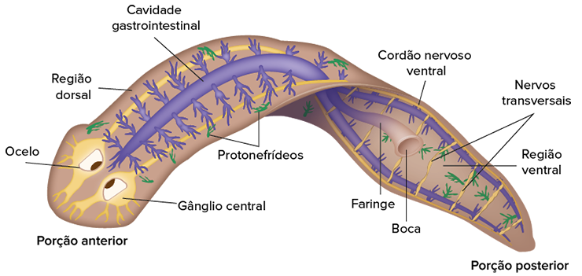

Platelmintos marinho e terrestre (à esquerda) e nematelmintos parasitas (à direita).
No clado Bilateria há uma imensa variedade de formas e dimensões corpóreas. Conforme visto na unidade anterior, a construção de árvores filogenéticas pode utilizar aspectos morfológicos, embriológicos e dados comparativos de sequências de DNA. Se considerada
exclusivamente essa última ferramenta, os filos que serão apresentados neste capítulo, Platyhelminthes e Nematoda, não apresentam um ancestral comum e exclusivo, apesar de possuírem um corpo com características morfológicas
semelhantes. Atualmente, a proposição de árvores filogenéticas procura combinar caracteres morfológicos, genéticos e embrionários para criar hipóteses e teorias sobre a história evolutiva dos seres vivos.
Se compararmos os animais bilatéria aos poríferos e cnidários, notaremos que o desenvolvimento embrionário e a estrutura corpórea dos platelmintos e nematelmintos, como popularmente são conhecidos, são muito mais complexos.
A presença de um terceiro folheto embrionário, a mesoderme, possibilita maior compartimentalização do corpo. Como consequência, novas estruturas e funções fisiológicas são incorporadas, possibilitando a sobrevivência dos
animais a diferentes pressões ambientais
- Compare o sistema digestório dos platelmintos ao dos nematelmintos.
- Caso uma planária seja acidentalmente dividida, o que ocorre com as frações geradas?
- Com relação à simetria corporal, qual é a principal diferença entre platelmintos e nematelmintos e os indivíduos dos filos Porifera e Cnidaria?
Neste capítulo serão abordadas as habilidades EM13CNT202 .
Filo Platyhelminthes
Também conhecidos como platelmintos, os animais incluídos no filo Platyhelminthes (do grego platys e helmins, que significam, respectivamente, “achatado” e “verme”) são assim nomeados por apresentarem corpo vermiforme achatado
dorsoventralmente e bilateralmente simétrico.
Além de uma grande diversidade de formas e cores, o tamanho do corpo destes animais pode variar desde poucos milímetros até alguns metros de comprimento.
Trazem como novidade evolutiva a presença de três folhetos embrionários, permitindo classificá-los como triblásticos. Todavia, a cavidade corpórea, ou celoma, ainda não se desenvolve entre a cavidade digestória
e a parede externa de seus corpos, e, por isso, os platelmintos são animais acelomados.
Os membros desse grupo podem ser de vida livre, ocupando o ambiente aquático marinho ou de água doce, ou ainda como parasitas.
Os principais representantes dos platelmintos de vida livre são as planárias, que pertencem à classe Turbellaria, e os exemplares de hábito parasitário, as tênias e o esquistossomo, respectivamente agrupados nas classes
Cestoda e Trematoda.
Obama atravessa o Atlântico
Revista Fapesp A distribuição das planárias parece estar em progressivo aumento territorial, e isso tem gerado a necessidade de conhecer os tipos existentes desses vermes presentes no planeta, a fim de precaver impactos na biodiversidade e até mesmo por questões sanitárias. Na reportagem trazida pela Revista Fapesp é apresentado um estudo divulgado em 2016, no qual é divulgada a descrição de uma nova espécie de planária, a primeira neotropical encontrada na Europa. Disponível em: (http://p.p4ed.com/ SGVGP).
Planária, um platelminto de vida livre. O tamanho médio varia entre as espécies, alguns indivíduos podem ter poucos milímetros, já outros podem chegar a 60 cm
Esquistossomos. A fêmea vive no interior do macho, que pode chegar a 1 cm, enquanto a fêmea alcança cerca de 1,5 cm.
Taenia solium parasita gastrintestinal humano, seu corpo pode chegar a 3 m de comprimento.
Estrutura e fisiologia
O surgimento da mesoderme e da simetria bilateral alteram o arranjo e a distribuição de estruturas e sistemas no interior do corpo dos platelmintos. Os vermes achatados passam a apresentar um estilo de vida mais ativo, em decorrência
da distribuição da musculatura que possibilita a sustentação e proporciona a especialização da locomoção.
Os sistemas circulatório e respiratório estão ausentes nesse grupo de organismos. A ocorrência das trocas gasosas
se dá por meio de difusão por todo o corpo do animal. Assim, o corpo achatado de forma dorsiventral torna-se de extrema importância para assegurar uma grande área de superfície em relação ao volume, facilitando a difusão
dos gases
Revestimento
Os trematoides e os cestoides apresentam uma camada externa de revestimento corpóreo, denominada tegumento. Essa estrutura proporciona proteção contra substâncias produzidas pelos hospedeiros que poderiam causar lesões a esses
parasitas. Todavia, o tegumento não impossibilita a ocorrência de trocas gasosas nem a absorção de nutrientes pelo corpo, principalmente o dos vermes trematoides.
Além disso, o metabolismo é adaptado a ambientes com
baixas concentrações de oxigênio, pois, nos intestinos dos hospedeiros, os platelmintos endoparasitas podem encontrar situações de anaerobiose
Sustentação e locomoção
A musculatura possibilita que a sustentação do corpo dos platelmintos ocorra por meio de um esqueleto hidrostático, o qual confere a esses animais grande elasticidade corporal. Esta forma de sustentação possibilita a diversificação
dos modos de locomoção que são observados nesse filo.
As planárias, por exemplo, locomovem-se por meio de movimentos de deslizamento auxiliados pelos cílios e pelo muco produzido por células glandulares. Por outro
lado, os platelmintos parasitas apresentam diferentes estruturas que os auxiliam em sua locomoção, já que passam a maior parte do seu ciclo de vida dentro do corpo de outros animais. Durante o estágio larval, eles são dotados
de cílios e, na fase adulta, a musculatura presente na parede do corpo contribui para a locomoção, sem que haja dependência do movimento dos fluidos corporais do hospedeiro
Digestão
Em relação ao sistema digestório, os platelmintos são classificados como vermes protostômios desprovidos de ânus; portanto, dotados de um trato digestório incompleto e ramificado.
Em relação à dieta, os turbelários, em
sua maioria, são carnívoros e obtêm seus nutrientes por meio de animais mortos, porém, algumas espécies são herbívoras. Neles, a digestão se inicia extracelularmente e é concluída no interior das células.
Nos trematódeos,
os alimentos provêm de tecidos e fluidos, ou, ainda, de matéria orgânica presente no intestino dos hospedeiros. A ingestão ocorre por meio de estruturas especializadas localizadas nas regiões ventral ou oral. Os cestódeos,
por sua vez, são desprovidos de sistema digestório, e a parede do seu corpo é a estrutura especializada para obtenção de nutrientes. Assim, a digestão ocorre por meio de difusão e pinocitose, e, para que haja a redução
do tamanho do material a ser consumido, substâncias enzimáticas são secretadas para fora de seus corpos.
Excreção
Nos platelmintos, a principal excreta eliminada é a amônia, cuja eliminação é feita por estruturas especializadas chamadas protonefrídeos. Nos protonefrídeos , a amônia é filtrada com o auxílio de células especiais chamadas células-flama e eliminada pela superfície do corpo através de pequenos orifícios presentes nessas estruturas, os nefridióporos.
Sistema nervoso
Neste filo, o sistema nervoso é ganglionar e há também o aprimoramento de órgãos sensoriais que, dispostos na extremidade anterior do corpo na maioria das espécies, sugerem o processo de cefalização. Nessa região, nota-se a
presença de dois gânglios centrais de onde partem dois cordões nervosos ventrais e longitudinais que se conectam por nervos transversais distribuídos por toda a extensão corpórea.
Nos turbelários, a extremidade anterior
é caracterizada pela presença de expansões laterais dotadas de terminações nervosas, as quais contribuem na interação desses organismos com o ambiente. Além disso, também se encontram agrupamentos de células fotorreceptoras
sensíveis à variação luminosa, conhecidas como ocelos, que atuam na orientação espacial dos turbelários
Gânglio: estrutura composta de aglomerados de partes específicas das células do sistema nervoso.
REECE, J. B. et al. Biologia de Campbell. 10. ed. Porto Alegre: Artmed, 2015.
Representação esquemática do corpo de uma planária mostrando, em detalhe, a distribuição dos sistemas presentes nesse animal
Questão resolvida
1
UEL-PR O grupo dos platelmintos é caracterizado pelo aparecimento, pela primeira vez na escala zoológica, da simetria bilateral. Com base nesse fato, assinale a alternativa que apresenta as características que, durante a evolução destes animais, surgiram associadas ao aparecimento da simetria bilateral
- Aparecimento do ânus e de células-flama.
- Aparecimento da boca e maior dimensão do corpo.
- Aparecimento da cefalização e movimentação direcional do corpo.
- Aparecimento da mesoderme e da cavidade gastrovascular.
- Aparecimento de digestão intracelular e melhor captura de presas.
Resolução:
Alternativa: C
Os platelmintos apresentam simetria bilateral, que, além de definir o corpo achatado de modo dorsoventral, também estabelece a diferenciação dos lados direito e esquerdo e das regiões anterior e posterior
do corpo. Associado à simetria bilateral, o sistema nervoso ganglionar apresenta os gânglios centrais localizados na extremidade anterior do corpo (na maioria dos platelmintos), tornando evidente o processo de cefalização.
Além disso, o refinamento de órgãos sensoriais propicia a movimentação direcional do corpo em busca de alimento, reprodução, proteção etc
Reprodução
Os platelmintos realizam as duas formas de reprodução: assexuada e sexuada.
A reprodução assexuada ocorre por fissão transversal do corpo, que é dotado de elevada capacidade regenerativa. Os platelmintos apresentam um
conjunto de células conhecidas como neoblastos, as quais se encontram distribuídas por toda extensão do corpo do animal.
Representação esquemática dos tipos de reprodução assexuada dos turbelários.
A forma como ocorre a reprodução sexuada é a principal característica usada para diferenciar as classes de platelmintos. A classificação está baseada no tipo de fecundação, na forma de desenvolvimento e nas características
sexuais de cada representante. Nos turbelários, os organismos são monoicos e realizam fecundação interna. Em seguida, os ovos produzidos são depositados no ambiente que, ao eclodirem, originam novas planárias, caracterizando,
portanto, um desenvolvimento direto.
Dentre as classes de hábito parasita, os trematoides, como o Schistosoma mansoni, causador da esquistossomose, caracterizam-se por serem dioicos e dotados de dimorfismo sexual,
isto é, de diferenças morfológicas entre macho e fêmea.
Trematódeos Schistosoma mansoni.
Tamanho médio: A. Fêmea: 1,5 cm; B. Macho: 1 cm.
Já nos cestoides, representados por duas principais espécies, a Taenia solium e a Taenia saginata, o corpo se mostra diferenciado em três regiões distintas: escólex, colo e estróbilo. Na escólex são encontrados ganchos ou ventosas responsáveis pela fixação do parasita na parede intestinal do hospedeiro, o colo é a região intermediária entre escólex e estróbilo, responsável pelo crescimento do verme. À medida que o colo se alonga, forma-se uma região segmentada, que caracteriza o estróbilo, onde se localizam as proglótides – estruturas achatadas que abrigam os órgãos reprodutivos feminino e masculino. Os platelmintos dessa classe, em geral, são monoicos e capazes de realizar a autofecundação dos gametas, gerando ovos. As proglótides com os ovos se destacam do corpo do animal e são liberadas para o ambiente junto com as fezes do hospedeiro.
Escólex das diferentes espécies de tênias. A. Taenia solium. Tamanho médio: 1,5 m; B. Taenia saginata. Tamanho médio: 4 m.
Antigamente, o termo usado para designar a cavidade presente nos nematódeos era pseudoceloma, e, por essa razão, os nematelmintos eram classificados como pseudocelomados. Entretanto, o termo não é adequado porque significa “falsa cavidade” e, atualmente, esta estrutura é reconhecida como uma cavidade funcional, cujo espaço apresenta resquícios de blastocele.
Exemplo de indivíduos membros do grupo Nematoda, o tamanho médio dos animais pode variar de alguns micrômetros até alguns metros.
Presença de estruturas derivadas na cutícula na cavidade bucal do Ancylostoma caninum, um parasita de cachorros. O comprimento médio é de 15 mm e a largura média é de 0,5 mm.
Vista da porção anterior de Ancylostoma duodenale. Tamanho médio: 1 cm.
Filo Nematoda
Nematoides, nematódeos e nematelmintos são diferentes termos aplicados a um grupo de helmintos pertencentes ao filo Nematoda (do latim nema e odes, que significam, respectivamente, “fio” e “semelhante a”). Os nematelmintos
são animais triblásticos e protostômios, assim como os platelmintos. Contudo, durante o desenvolvimento embrionário, forma-se o blastoceloma, uma cavidade corporal que os diferencia dos vermes achatados.
A filogenia desse grupo tem sofrido constantes modificações, em consequência de novas evidências moleculares que indicam a inclusão dos nematelmintos no clado Ecdysozoa, no qual também se inclui o filo Arthropoda,
que será estudado mais adiante. A característica principal deste clado é a presença de uma cutícula que recobre todo o corpo do animal, que é trocada pelo menos em uma fase da vida. Este processo de troca do revestimento
externo é denominado ecdise. Nesta obra, não utilizaremos a classificação dos nematelmintos como integrantes do grupo Ecdysozoa, embora tenha aumentado na comunidade científica o número de pesquisadores que defendam essa
classificação.
Assim como os platelmintos, os nematódeos podem apresentar hábitos de vida livre ou parasitários. Os representantes deste grupo apresentam corpo de formato vermiforme, porém cilíndrico e afilado na porção
posterior. As alterações fisiológicas desse grupo permitem a adaptação às mais diversas condições ambientais.
Estrutura e fisiologia
Esses animais podem apresentar tamanhos variados, desde poucos micrômetros até alguns metros de comprimento. Toda a superfície corpórea externa dos nematódeos é recoberta por uma cutícula bem desenvolvida, secretada pela epiderme
e formada por duas estruturas: exocutícula e endocutícula. A estrutura externa é composta de lipídeos e proteínas, principalmente o colágeno.
A cutícula dos nematódeos atua como um exoesqueleto flexível que tem como
função a sustentação e redução da permeabilidade da parede corporal. A presença da cutícula favorece a sobrevivência em ambientes hostis, tais como o ambiente terrestre ou o interior do trato digestivo de hospedeiros.
Ao nos referirmos ao corpo dos nematelmintos, nós o caracterizamos como “um tubo dentro de outro tubo”, em referência a seu aspecto alongado e linear. Além disso, o trato digestório está localizado no interior de uma cavidade
parcialmente revestida por mesoderme – o blastoceloma (conhecido anteriormente como pseudoceloma).
Sustentação e locomoção
A sustentação do corpo dos nematelmintos é realizada pela organização do blastoceloma. Esta cavidade é ocupada pelos órgãos, e os pequenos espaços existentes são preenchidos por fluidos corporais, que atuam de modo semelhante
a um esqueleto hidrostático.
A locomoção é garantida pela presença de uma musculatura longitudinal, disposta logo abaixo da epiderme. Os músculos realizam movimentos não uniformes e atuam em conjunto com a cutícula
– que fornece resistência – e a pressão interna exercida pelo movimento do fluido de preenchimento da cavidade corpórea. Como os nematelmintos não apresentam sistemas circulatório e respiratório, além de contribuir com
a locomoção, os fluidos corporais também contribuem com as trocas gasosas. Os gases são absorvidos por difusão através da superfície do corpo e distribuídos para as células pelo líquido que preenche o blastoceloma.
Apesar de boca e ânus serem encontrados nesses vermes, o filo Nematoda é considerado protostômio, já que o blastóporo dará origem à boca. Oânus surge, posteriormente, de outro orifício formado durante o desenvolvimento embrionário.
Digestão
Uma importante novidade evolutiva presente nos nematódeos é a diferenciação dos eixos anteroposterior de seus corpos vermiformes, devido à presença da boca e do ânus. A presença do ânus caracteriza o sistema digestório completo,
possibilitando um sentido único do alimento ao longo do corpo do animal.
Em geral, na boca, estão presentes lábios que circundam a estrutura e que são derivados de modificações sofridas pela cutícula. Devido à grande
variedade dos hábitos alimentares, a estrutura da cavidade bucal é bastante diversificada. Esses vermes podem ser parasitas, tanto de outros animais como de vegetais, predadores ou detritívoros, alimentando- -se de animais
mortos em decomposição ou detritos.
Uma vez capturado, o alimento é encaminhado à faringe, cuja contração possibilita a movimentação dos alimentos. Nessa estrutura são secretadas enzimas digestivas, garantindo o início
da digestão extracelular. No intestino, os nutrientes são absorvidos pelas células, nas quais se completa a digestão intracelular.
Excreção
Os nematódeos possuem células alongadas, em forma de saco, conhecidas como renetes, responsáveis pela eliminação de produtos do metabolismo de proteínas. Em muitas espécies, os renetes são encontrados em pares e dispostos em
formato de “H” ou “Y” invertido. Cada uma dessas células se abre para o exterior, por meio de um ducto e um poro na epiderme.
A grande maioria dos nematódeos elimina amônia, com exceção das espécies de ambiente hipertônico,
que eliminam ureia, em decorrência da solubilidade característica, que pode representar uma adaptação ao ambiente em que vivem.
Sistema nervoso
Ao redor da faringe, é encontrado um anel nervoso associado a nervos longitudinais que se estendem ao longo do corpo do animal. Outra característica do sistema nervoso desse filo é a presença de estruturas quimiorreceptoras ou de função quimiossensorial que contribuem na habilidade desses vermes de reconhecer estímulos táteis, importantes para locomoção e comportamento de fuga
Reprodução
Os nematódeos são organismos majoritariamente dioicos que apresentam diferentes graus de dimorfismo sexual, o que facilita a identificação dos sexos. Em geral, o macho apresenta tamanho reduzido e é dotado de uma espícula copulatória
(que auxilia na fixação ao corpo da fêmea) e uma cloaca, abertura comum aos sistemas digestórios e reprodutor. Já a fêmea possui maior tamanho em relação ao macho, apresenta aberturas distintas para os dois sistemas, sendo
elas o ânus e o orifício genital, localizado anteriormente no corpo.
A fecundação é interna e ocorre no útero das fêmeas. O ovo originado é revestido por quitina e dele são liberadas formas juvenis de nematódeos que
já se assemelham ao organismo adulto, exceto pela ausência de sistema reprodutor. No decorrer da vida, após as sucessivas trocas de cutícula, esse sistema se desenvolve, indicando o estágio de vida adulto.
Fonte: Richard C. Brusca; Wendy Moore; Stephen M. Shuster. Invertebrados. 3. ed. Rio de Janeiro: Guanabara Koogan, 2013.
Representação esquemática da comparação do tamanho e das estruturas corpóreas presentes em fêmeas
(A) e machos (B) dos nematelmintos.
1
O que é um sistema digestório completo? Em qual grupo de vermes surgiu essa característica?
2
Como ocorre o transporte de gases e nutrientes nos vermes do filo Nematoda?
3
Quais são as três classes de platelmintos? Dê um exemplo de animal pertencente a cada uma delas.
4
ual é a principal excreta nitrogenada dos nematódeos? Cite o nome da estrutura responsável pela excreção nesses vermes.
5
Uece A denominação células-flama provém da aparência destes tipos de células, as quais apresentam tufos de cílios que se assemelham à chama de uma vela. Estão presentes nos platelmintos, funcionando no processo de
- digestão.
- respiração.
- excreção.
- circulação.
1
m qual grupo de animais ocorreu o processo de cefalização? Explique a vantagem do surgimento dessa característica.
2
UFRGS 2020 A hidatidose cística é uma verminose provocada pelo Echinococcus granulosus, verme chamado popularmente de “tênia-anã”, enquanto a teníase tem como um dos organismos causadores a Taenia solium ou “tênia”.
Em relação às tênias, é correto afirmar que
- a Taenia solium desenvolve os cisticercos nos músculos do boi, que é seu hospedeiro intermediário.
- a Taenia solium e o Echinococcus granulosus são vermes com sistema digestório completo.
- a Taenia solium desenvolve a fase larval em ambientes de água doce.
- a Taenia solium e o Echinococcus granulosus pertencem ao grupo dos platelmintos, que engloba também espécies de vida livre
- a Taenia solium adulta realiza a reprodução no intestino do hospedeiro intermediário.
3
UFRGS 2017 A popularidade do consumo de peixes e frutos do mar crus tem aumentado o número de casos de infecção por Nematodas. Considere as seguintes afirmações sobre esse filo.
- São vermes de corpo achatado e sistema digestivo completo.
- Têm, entre seus principais representantes, as lombrigas e as tênias.
- Apresentam corpos alongados e cilíndricos, podendo ter vida livre ou ser parasitas
Quais estão corretas?
- Apenas I.
- Apenas II.
- Apenas III.
- Apenas II e III.
- I, II e III.
4
Levando em conta que os sistemas circulatório e respiratório estão ausentes nos platelmintos, por que o achatamento dorsoventral do corpo desses animais é importante?
5
A lombriga é um verme de corpo cilíndrico, alongado, é parasita de vertebrados e pertence ao filo Nematoda. Os animais desse filo apresentam todas as características listadas, EXCETO:
- Presença de cutícula revestindo o corpo.
- Presença de blastoceloma.
- Sistema circulatório ausente.
- Presença de renetes para excreção.
- Sistema digestório incompleto.
1
PUC-Rio O filo Platyhelminthes inclui tanto formas de vida livre como organismos endo e ectoparasitas. Platelmintos endoparasitas se caracterizam por:
- ausência de cutícula, de tubo digestório e de ocelos.
- ausência de cutícula, presença de ganchos e ventosas e de estágios larvais.
- presença de cutícula, de ganchos e ventosas e de estágios larvais
- esença de cutícula, ausência de tubo digestório, presença de ocelos no estágio adulto.
- presença de tubo digestório completo, com boca e ânus.